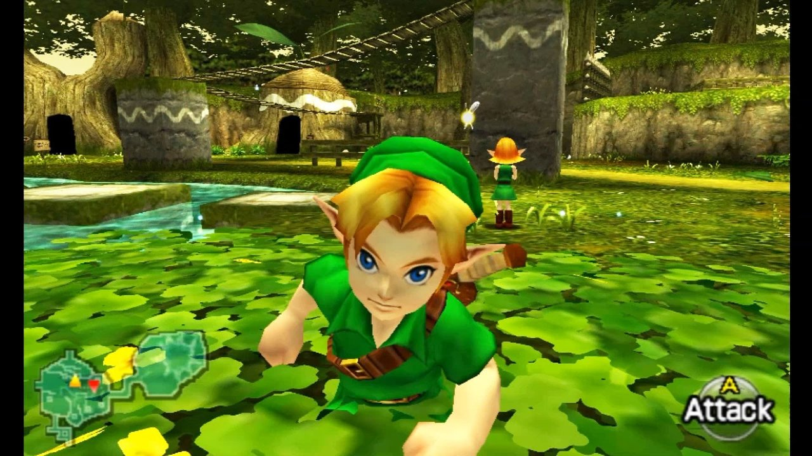
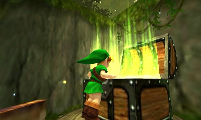
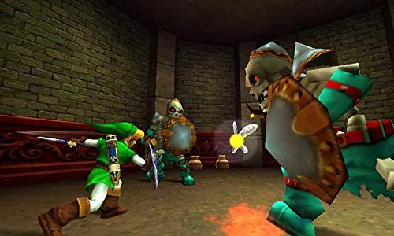
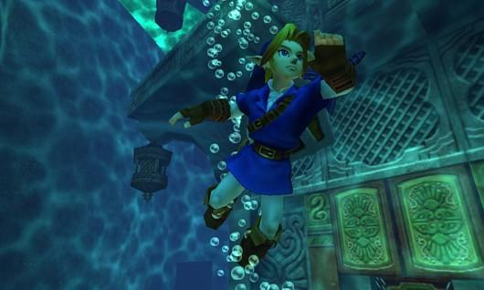
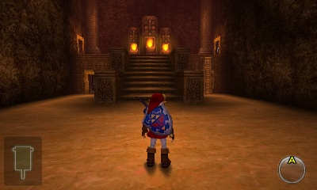

DECOUVREZ UN NOUVEL UNIVERS
Le royaume d'Hyrule est le résultat de l'unification de plusieurs contrées où vivent différents peuples,
avec lesquels Link peut interagir. Les Kokiris sont des enfants semblables à des Hyliens mais qui ne
grandissent jamais. Ils reçoivent à leur naissance une fée chargée de veiller sur chacun d'eux et ne peuvent
pas quitter la forêt. Les Gorons, êtres robustes dotés d'une force phénoménale et semblables à un rocher une
fois repliés sur eux-mêmes, sont insensibles à la lave et se déplacent en roulant. Ils ont à leur tête
Darunia.
Les Zoras sont des êtres marins mi-hommes, mi-poissons avec à leur tête le roi Zora. Les Sheikahs sont un
peuple quasiment éteint puisqu'on ne dénombre plus qu'un seul individu : Impa, la nourrice de Zelda. Enfin,
les Gerudos ont la grande particularité de n'être composés que de femmes. Un seul homme Gerudo naît par
siècle et le dernier en date n'est autre que Ganondorf. Il est selon leur loi devenu leur chef bien qu'elles
ne le reconnaissent pas en tant que tel, en raison de la violence de ses méthodes. En son absence, c'est
Nabooru qui est à leur tête.
Decouvrez des paysages et ennemis diversifiers




